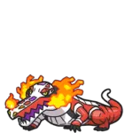
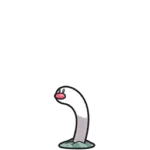
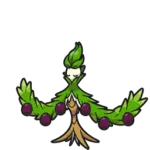
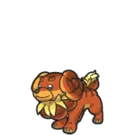

| # | Tipo | Super efetivo contra | Resistente contra | Fraco contra | Imune contra |
|---|---|---|---|---|---|
| Normal | -- | -- | Lutador | Fantasma | |
| Lutador | Normal, Pedra, Aço, Gelo e Sombrio | Sombrio, Pedra e Inseto | Voador, Psiquico e Fada | -- | |
| Voador | Lutador, Inseto e Planta | Planta, Lutador e Inseto | Elétrico, Pedra e Gelo | Terrestre | |
| Venenoso | Planta e Fada | Venenoso, Inseto, Fada, Lutador e Planta | Terrestre e Psiquico | -- | |
| Terrestre | Venenoso, Pedra, Aço, Fogo e Elétrico | Venenoso e Pedra | Água, Planta e Gelo | Elétrico | |
| Pedra | Voador, Inseto, Fogo e Gelo | Venenoso, Normal, Fogo e Voador | Lutador, Planta, Terrestre, Aço e Água | -- | |
| Inseto | Planta, Psiquico e Sombrio | Lutador, Planta e Terrestre | Fogo, Voador e Pedra | -- | |
| Fantasma | Fantasma e Psiquico | Venenoso e Inseto | Fantasma e Sombrio | Normal e Lutador | |
| Aço | Pedra, Gelo e Fada | Gelo, Normal, Planta, Voador, Pedra, Psiquico, Dragão, Fada, Aço e Inseto | Fogo, Terrestre e Lutador | Venenoso | |
| Fogo | Inseto, Aço, Planta e Gelo | Aço, Fogo, Planta, Gelo, Fada e Inseto | Água, Terrestre e Pedra | -- | |
| Água | Terrestre, Pedra e Fogo | Fogo, Água, Gelo e Aço | Planta e Elétrico | -- | |
| Grama | Terrestre, Pedra e Água | Água, Planta, Terrestre e Eletríco | Fogo, Voador, Gelo, Venenoso e Inseto | -- | |
| Elétrico | Voador e Água | Elétrico, Voador e Aço | Terrestre | -- | |
| Psiquico | Lutador e Venenoso | Psiquico e Lutador | Inseto, Fantasma e Sombrio | -- | |
| Gelo | Voador, Terrestre, Planta e Dragão | Gelo | Fogo, Pedra, Lutador e Aço | -- | |
| Dragão | Dragão | Elétrico, Fogo, Água e Inseto | Gelo, Dragão e Fada | -- | |
| Fada | Lutador, Dragão, Sombrio | Sombrio, Lutador e Inseto | Venenoso e Aço | Dragão | |
| Sombrio | Fantasma e Psiquico | Sombrio e Fantasma | Lutador, Inseto e Fada | Psiquico |
| Pokemon | Nome | Como evoluir? | Evolução | Nome |
|---|---|---|---|---|

|
Sprigatito | Chegar no level 16 | Floragato | |
| Floragato | Chegar no level 36 | Meowscarada | ||
| Fuecoco | Chegar no level 16 | Crocalor | ||
| Crocalor | Chegar no level 36 |  | Skeledirge | |
| Quaxly | Chegar no level 16 | Quaxwell | ||
| Quaxwell | Chegar no level 36 | Quaquaval | ||

|
Lechonk | Chegar no level 18 + gênero macho | Oinkologne Macho | |
|
|
Lechonk | Chegar no level 18 + gênero fêmea | Oinkologne Fêmea | |

|
Dunsparce | Subir de level depois que aprender e equipar o golpe Hyper Drill | Dudunsparce | |
| Tarountula | Chegar no level 15 | Spidops | ||
| Nymble | Chegar no level 24 | Lokix | ||
| Rellor | Subir de level Andar 1000 passos fora da Poké Bola no modo Let’s GO em uma área barrenta |

|
Rabsca | |
| Greavard | Chegar no level 30 à noite | Houndstone | ||
| Flittle | Chegar no level 35 | Espathra | ||
| Girafarig | Subir de level enquanto o golpe Twin Beam estiver em seu moveset | Farigiraf | ||
|  | Wiglett | Chegar no level 26 | Wugtrio | |
| Finizen | Subir de level após batalhar enquanto estiver no modo multiplayer (com outros jogadores) usando a função Union Circle |

|
Palafin | |
| Smoliv | Chegar no level 25 | Dolliv | ||
| Dolliv | Chegar no level 35 |  | Arboliva | |
| Capsakid | Usar uma Fire Stone | Scovillain | ||
| Tadbulb | Usar uma Thunder Stone |
.webp)
|
Bellibolt | |
| Varoom | Chegar no level 40 | Revavroom | ||
| Tandemaus | Chegar no level 25 (1/26 chance de conseguir um com apenas um filhote) | Maushold | ||

|
Cetoddle | Usar uma Ice Stone | Cetitan | |
| Frigibax | Chegar no level 35 | Arctibax | ||
| Arctibax | Chegar no level 54 | Baxcalibur | ||
| Pawmi | Chegar no level 18 | Pawmo | ||
| Pawmo | Subir de level após andar 1000 passos fora da Poké Bola no modo Let’s GO | Pawmot | ||
| Wattrel | Chegar no level 25 | Kilowattrel | ||
| Nacli | Chegar no level 24 | Naclstack | ||
| Naclstack | Chegar no level 38 | Garganacl | ||
| Glimmet | Chegar no level 35 | Glra | ||
| Shroodle | Chegar no level 28 | Grafaiai | ||
| Fidough | Chegar no level 26 |  | Dachsbun | |
| Maschiff | Chegar no level 30 | Mabosstiff | ||
| Bramblin | Subir de level após andar 1000 passos fora da Poké Bola no modo Let’s GO | Brambleghast | ||
| Gimmighoul | Subir de level após obter 999 moedas de Gimmighoul | Gholdengo | ||
| Tinkatink | Chegar no level 24 | Tinkatuff | ||
| Tinkatink | Chegar no level 38 | Tinkatuff | ||
| Charcadet | Use o item Auspicious Armor. Para conseguir esse item, converse com o homem em Zapapico após conseguir 10 Bronzor fragments. Exclusivo de Pokémon Scarlet | Armarouge | ||
| Charcadet | Use o item Malicious Armor. Para conseguir esse item, converse com o mulher em Zapapico após conseguir 10 Sinistea Chips. Exclusivo de Pokémon Violet | Ceruledge | ||
| Toedscool | Chegar no level 30 | Toedscruel | ||
| Bisharp | Subir de level enquanto estiver segurando o item Leader’s Crest após derrotar outros 3 Bisharp | Kingambit | ||
| Wooper | Chegar ao level 20 | Clodsire | ||
| Primeape | Subir de level após usar o golpe Rage Fist 20 vezes | Annihilape |
Koraidon é um Pokémon Lendário Lutador e Dragão, comumente associado a Pokémon Escarlate. Aqueles familiarizados com a série saberão que esses Pokémon de nível de jogo final são incrivelmente poderosos e difíceis de derrotar, com uma chance limitada de adicioná-los ao Pokédex.
No entanto, Koraidon é um pouco diferente com o Pokémon se juntando ao jogador desde o início. Existe a opção de adicionar uma variação do modo de batalha do personagem ao time de um jogador depois de usá-lo como companheiro de viagem, mas o que é mais complexo é que também existe uma rara oportunidade de capturar um clone do Legendary, um paralelo de tipos para negociar ou manter.
Um Pokémon do tipo Elétrico e do tipo Dragão, Miraidon é o tipo de personagem que os fãs provavelmente vão querer ver retornar no futuro, por causa de seu lindo design visual e importância para a história. Outro Pokémon Lendário, é o mascote de Tolet e se junta aos jogadores em suas viagens. Tudo sobre Miraidon espelha as mesmas técnicas de Koraidon, com o jogador aproveitando a oportunidade por um tempo limitado para mover o personagem para seu grupo de batalha e obtendo a rara oportunidade de capturar uma iteração paralela, que é um segredo fortemente guardado. No entanto, Koraidon é um pouco diferente com o Pokémon se juntando ao jogador desde o início. Existe a opção de adicionar uma variação do modo de batalha do personagem ao time de um jogador depois de usá-lo como companheiro de viagem, mas o que é mais complexo é que também existe uma rara oportunidade de capturar um clone do Legendary, um paralelo de tipos para negociar ou manter.
Um Pokémon do tipo Dark e Grass que também se enquadra na categoria Legendary, do ponto de vista do design, Wo-Chien é um personagem único e de aparência rara, refletindo um caracol antigo que talvez se sinta mais em casa escondido na grama alta. O processo de captura não é fácil. Os jogadores devem coletar 8 estacas azuis diferentes para revelar um santuário que os ajudará a identificar esse ser incrível. O santuário em si é difícil de encontrar e capturar o personagem será um desafio. Longe de ser bonitinho, o personagem certamente será um dos mais procurados, principalmente para quem procura os achados mais raros.
O Pokémon do tipo Dark and Ice é outra figura misteriosa que os jogadores vão querer adicionar ao seu time. O personagem é um dos muitos Pokémon raros que são um pouco mais difíceis de encontrar, com as características felinas certamente se destacando e entrando no folclore e na mitologia da série. Assim como capturar Wo-Chien, capturar Chien-Pao representa um desafio semelhante envolvendo 8 estacas azuis diferentes, que quando coletadas revelarão o santuário. Pode ser um longo processo para se familiarizar, mas as recompensas de potencialmente adicionar o lendário ao Pokédex valem a pena.

As semelhanças na configuração continuam com Ting-Lu, que é outro personagem incrivelmente intrigante que acrescenta muito à tradição do universo. O personagem é um tipo Dark e um tipo Ground, que é uma ótima combinação, além de um Legendary na Pokédex. Visualmente, parece um pouco com um cervo rochoso. Com uma espécie de recipiente na cabeça, Ting-Lu é uma figura de aparência incomum. Assim como seus antecessores da lista, ele pode ser encontrado em um santuário após coletar essas estacas misteriosas. Os iniciantes devem saber que devem seguir esta lenda se quiserem adicionar um poderoso Pokémon às suas fileiras.
A região de Paldea oferece muitos Pokémon lendários diferentes para coletar e Chi-Yu está entre os mais fortes. Como uma combinação de Dark e Fire, há um potencial ilimitado de como os jogadores podem usar o personagem se Chi-Yu for adicionado ao time.
Ditto sempre foi uma figura difícil e rara em qualquer Pokémon título por causa de suas habilidades de mudança de forma. O personagem não aparece com frequência, com o tipo Normal representando um desafio desde sua primeira aparição. Escarlate e Violeta esconder Ditto à vista de todos mais uma vez. Ditto aparecerá aleatoriamente, assim como em outros títulos. É sempre uma surpresa quando o Pokémon se revela e a única dica sobre como realmente encontrá-lo é continuar a capturar o máximo possível de Pokémon de nível inferior, com o mesmo provavelmente escondido entre eles. É tudo uma questão de sorte.
Os Zorua são encontrados na Província do Norte (Área Um) e na Província Oeste (Área Três). Conseguimos pegar vários Zorua em rápida sucessão nos arredores de Medali, por isso recomendamos ir até lá para encontrar um Zorua. Existem algumas maneiras de identificar um Zorua. Uma delas é que você pode enfrentar um Pokémon selvagem em uma batalha. Se o seu Pokémon inimigo for um Zorua, ele se transformará assim que a batalha começar, para que você possa fugir imediatamente se o inimigo escolhido não for um Zorua. No entanto, há também uma maneira mais rápida. Pressione o botão 'ZL' e use o manípulo direito para "travar" um Pokémon na natureza. Dessa forma, você pode ver os nomes dos Pokémon antes de encontrá-los (se já os encontrou antes).
| Cor | Localização | Santuário | Lendário |
|---|---|---|---|
| Verde | Noroeste Paldea | Santuário Groundblight | Ting-Lu |
| Azul | Nordeste Paldea | Santuário Firescourge | Chi-Yu |
| Amarelo | Sudoeste Paldea | Santuário Icerend | Chien-Pao |
| Roxo | Sudeste Paldea | Santuário Grasswither | Wo-Chien |